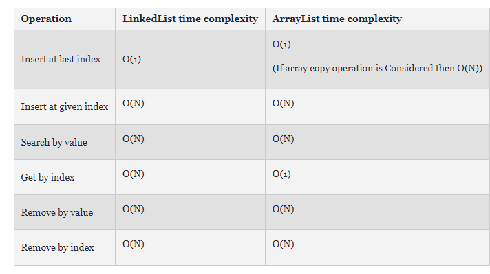

List
- 선형적인 자료구조로서, 데이터간의 순서가 존재.
- 종류
- ArrayList
- LinkedList
- 데이터간의 연결 방식에 따라
- Single Linked List
- Double Linked List
- 데이터간의 연결 방식에 따라
ArrayList
- 배열 기반의 리스트
- 단, 배열과 달리 저장 공간이 가변적임.
- 메모리 공간을 연속적으로 사용. 컴퓨터가 연산하기 쉬운 구조.
- 삽입, 삭제
- 중앙에 데이터를 삽입, 삭제한다고 했을 때, 수정 요소의 뒤쪽을 뒤로 밀거나 앞으로 당겨야 하기 때문에 시간복잡도는 O(N)
- 탐색
- Random Access이므로 시간복잡도는 O(1)
LinkedList
- 컴퓨터 메모리상 공간을 연속적으로 차지하고 있지 않으며, 데이터를 논리적으로 연결시킨 자료구조.
- 노드를 구성 요소로 하는데, 노드는 데이터와 다음 노드를 가리키는 포인터로 구성되어 있다.
가장 앞의 노드를 Head, 가장 마지막의 노드를 Tail. Tail의 포인터는 다음 노드가 없으므로 Null
ArrayList와 LinkedList의 시간복잡도 비교 
- 장점
- 배열의 복사나 재할당 없이 데이터를 손쉽게 추가할 수 있음.
- 포인터를 이용하기 때문에 유연한 공간
- 단점
- 데이터 접근에 대한 시간이 늘어남
- 검색에 있어서는 ArrayList가, 추가 및 삭제에 있어서는 LinkedList가 적절해보임.
DoubleLinkedList
- LinkedList와 달리 한 노드에서 앞 뒤 노드의 포인터를 모두 가지고 있음.
- Head 노드와 Tail 노드 양쪽에서 데이터 접근이 가능하기 때문에 탐색 작업이 반으로 줄어들 수 있음.
- 단점은 양방향 연결을 위한 작업이 필요하다는 것.
스택과 큐는 구현 방식에 있어서 리스트와 관련있기에 같이 분류.
Stack
- 데이터를 쌓아 올리는 방식의 자료구조
- LIFO(Last In First Out : 후입선출)
- top에서만 모든 input(push)과 output(pop)이 이루어짐.
- 주로 LinkedList or Array 이용하여 구현.
- 함수 실행 컨텍스트를 저장하는 등의 용도로 사용.
Queue
- 대기열 형태의 자료구조
- FIFO(First In First Out : 선입선출)
- front(처음)에서 output(dequeue)이, rear(끝)에서 input(enqueue)이 이루어짐
- 순서가 보장된다는 특징이 있음.
- Linked List를 이용한 구현과, 배열을 이용한 구현이 있음.
Linear Queue
- 배열을 이용한 선형 큐.
- 배열을 이용했기 때문에 dequeue시 데이터를 한 칸씩 옮겨주는 작업이 필요. 시간복잡도 O(N). 비효율적
Circular Queue
- 배열을 이용한 큐 구현시 Linear Queue의 단점을 보완한 원 형식의 큐
- 고정된 크기의 배열로 구현.
- front 혹은 rear의 index를 capacity로 나누는 아이디어를 통해 데이터 dequeue, enqueue시 index를 별도로 관리하지 않아도 되도록 함.